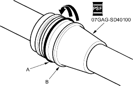
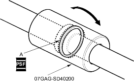
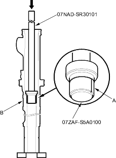
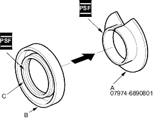

- Coat the special tool with power steering fluid, then slide it onto the rack, big end first.
- Position the new O-ring (A) and new piston seal ring (B) on the special tool, then slide them down toward the big end of the tool.
Note these items during reassembly:
- Do not over expand the resin seal rings. Install the resin seal rings with care so as not to damage them. After installation, be sure to contract the seal ring using the special tool (sizing tool).
- Replace piston's O-ring and seal ring as a set.

- Pull the O-ring off into the piston groove, then pull the piston seal ring off into the piston groove on top of the O-ring.
- Coat the piston seal ring (A) and the inside of the special tool with power steering fluid, then carefully slide the tool onto the rack and over the piston seal ring.
- Move the special tool back and forth several times to make the piston seal ring fit snugly in the piston.

- Set the new bushing (A) on the special tool, and insert the special tools into the cylinder housing (B).

- Set the cylinder in a press, and install the bushing (A) into the bottom of the cylinder by pressing on the tool with press. Do not push on the tool with excessive force as it may damage the new bushing.
- Coat the sliding surface of the special tool (A) and new cylinder end seal (B) with power steering fluid. Place the seal on the special tool with its grooved side (C) facing opposite the special tool.
